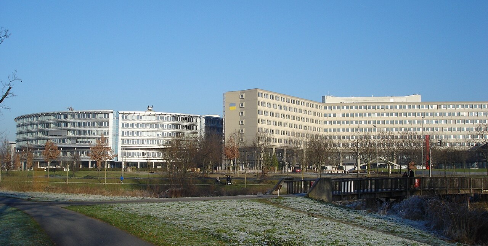
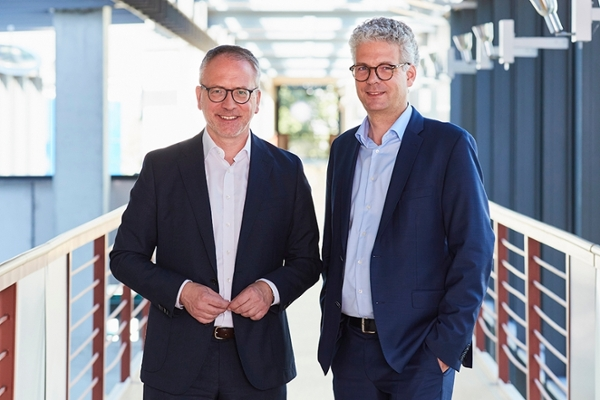
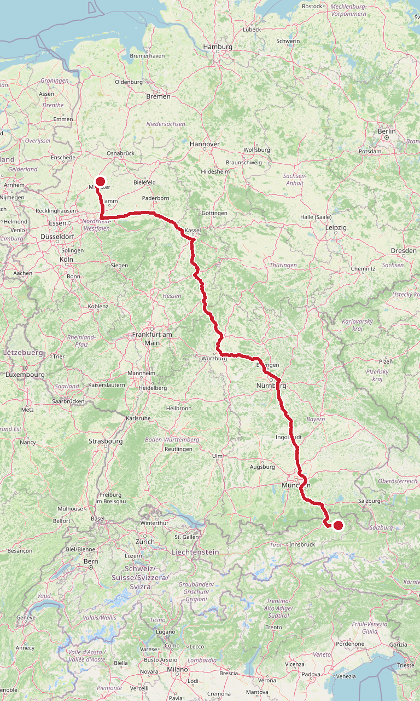

ToDo
Zeitplan
KundeHarro Höfliger, Bartholomä
Speaker-Kalender „Kunde", 13:00–17:00. Zuschlag 08.10.2026. Harro Höfliger hat in Bartholomä keinen eigenen Standort — externe Location im Ostalbkreis.
FehltAdresse, Vortragszeit, Thema, Publikum. Kommt von Daniel.
FahrtBartholomä → Münster · 542 km · reine Fahrzeit 5 h 28
A7 Würzburg — A3 Frankfurt — A45 Sauerlandlinie über Siegen — A1 Dortmund — Münster. Fahrer Florian Kaufmann.

HotelHotel Kaiserhof Münster · Bahnhofstr. 14 · 2,2 km zur Gartenstr. 194
| Christoph | KAISERHOF-6CEC3B-17338-2 · Einzelzimmer Standard · 144 € |
| Florian Kaufmann | KAISERHOF-6CEC3B-17338 · Einzelzimmer Standard · 144 € |
| Bedingungen | Garantiert, Ankunft nach 18 Uhr · Zahlung im Hotel · Frühstück nicht inklusive, 24 € p. P. · Storno kostenfrei bis 02.11., 18:00 · Tel. +49 251 4178 623 |
ChristophTechnikcheck
Deutsche Rentenversicherung Westfalen, Gartenstr. 194. Im Speaker-Kalender, von Daniel am 12.10. eingetragen.
Abstimmung 12.10.: „ich denke, dass ich Sie am Empfang abholen werde" (DRV). Eigener Laptop per HDMI, Ton. DRV stellt Headset — du bevorzugst Handmikro. Zwei Saalmikros für Fragen. Florian filmt die Keynote von hinten; DRV will die Aufzeichnung für die mittlere Führungsebene.

AnkommenGet-together, Slido-Abfrage
Drei Einstiegsfragen: „Welches Wort beschreibt spontan am besten, was Sie fühlen, wenn Sie an KI denken?" · Nutzung von KI für uns als Gesellschaft — Chance oder Gefahr? · Nutzung von KI für uns als DRV Westfalen — Chance oder Gefahr?
Vereinbart 12.10.Im Gespräch hieß das Tool Mentimeter. Du fotografierst die Ergebnisse und greifst sie in der Keynote auf: „ich würde es wirklich dann einstreuen in den Vortrag".
HausBegrüßung durch die Geschäftsführung
Anmoderation Christian Lemke, Übergabe an die Geschäftsführung.

ChristophKeynote: KI — Möglichkeiten, Grenzen und ethische Fragestellungen
Anmoderation Dagmar Vieregge (kein Foto auffindbar). Keine Q & A im Regiebogen — die Bestellung nennt eine.
Publikum: ca. 80 Führungskräfte des höheren Dienstes plus Geschäftsführung, überwiegend Juristinnen und Juristen. KI-Reife niedrig. ChatGPT, Claude und Mistral dienstlich verboten. Eigene Systeme: CLARA, KIRA, RENATE.
| ✓ Grundverständnis | „Was ist KI eigentlich, was kann sie heute bereits und wie entwickelt sie sich aktuell weiter? Wo liegen sinnvolle Einsatzmöglichkeiten, aber auch Grenzen und Risiken?" |
| ✓ Mensch und Maschine | „Wo kann KI zum Teampartner werden und ihre Stärken ausspielen – und wo bleibt der Mensch unverzichtbar?" Emotionen, Empathie, Urteilsvermögen, Verantwortung. |
| ✓ Optimismus statt Angst | „Uns geht es nicht darum, KI ausschließlich aus einer Risiko- oder Verbotsperspektive zu betrachten." |
| ✓ Aufhänger | Dein Satz „die Zukunft wird programmiert" gegen das Tagesmotto „Gemeinsam Zukunft gestalten". |
| ✓ KI-Hackerangriffe | Anthropic-Report vom 10.09.2026: Missbrauch durch Midnight Blizzard (GTG-20006), ShinyHunters, einen Akteur gegen europäische Parteien und Medien; laut Spiegel ein vierter Fall, in dem ein KI-Agent eigenständig angriff. 2025 bereits eine automatisierte chinesische Spionagekampagne über Claude Code. Pointe: Der Hersteller deckt es selbst auf — wer merkt es in einem Haus mit Sozialdaten? Report |
| ✓ AI Act | Digital Omnibus (VO EU 2026/1744): Hochrisiko Anhang III auf 02.12.2027, Anhang I auf 02.08.2028. Art. 50 Transparenz gilt seit 02.08.2026. Vor dem Vortrag im Amtsblatt gegenprüfen. KPMG |
| ✓ Schatten-KI | Die Kundin vermutet Nutzung über private Endgeräte. IW-Befragung 2026: 29,1 % der beruflichen KI-Nutzenden nutzen nicht bereitgestellte Tools, unter 30 Jahren 38,4 %. Ein Verbot erzeugt unbeobachtete Nutzung. IW |
| ✗ Nachrangig | „Prozessoptimierung, Effizienzsteigerung oder KI im HR-Bereich." Die Bestellung listet diese Themen noch — alter Angebotstext. Maßgeblich ist die Mail vom 29.07. |
Anmoderation, deine Stichworte vom 12.10.: digitale Ethik, Zukunft der Gesellschaft in Zeiten der KI, KI seit 1989.
Was die DRV beschäftigt (12.10.): „dass eine KI eine andere hackt" · „kann die in unsere Waffensysteme eingreifen oder Verbreitung von Falschnachrichten" · bei RENATE: „wie viel Prozent der Informationen sind jetzt auch schon korrekt".
Wer im Saal sitzt — DRV Westfalen in Zahlen
| Belegschaft | 3.153 Beschäftigte zum 31.12.2025: 2.436 Hauptverwaltung, 717 in den fünf Kliniken. Durchschnittsalter Hauptverwaltung 44 Jahre, 39 % Teilzeit, 158 Neueinstellungen 2025. Jahresbericht |
| Kerngeschäft | 1.209.586 Renten (Dez. 2025), 9,3 % aller Renten der Regionalträger. 102.073 Rentenanträge, 75.768 Rentenzugänge 2025. 3.072.898 Versicherte (2024). Jahresbericht |
| Was die Führungskräfte tun | Leiten Sachbearbeitung zu Rente, Reha, Betriebsprüfung, Versicherungskonten. KI setzt dort an, wo Akten gelesen, sortiert und geprüft werden. |
| Wo die DRV steht | DRV Bund testet KI zur Qualitätssicherung von Gutachten: rund 90.000 Gutachten pro Jahr zur Erwerbsminderungsrente. Regelbasierte Entscheidungshilfe RegEnt, 15 Software-Bots seit 2023. DRV Bund, 23.06.2025 |
| Der Druck | Nachbarträger DRV Rheinland, ebenfalls NOW IT-Verbund: „Uns fehlen aktuell schon qualifizierte Renten- und Reha-Sachbearbeiterinnen und Sachbearbeiter.“ In zehn Jahren gehen dort 817 erfahrene Mitarbeitende in Pension. Rede Baumann, 26.06.2026 |
Fallbeispiele für dieses Publikum
| ✗ Robodebt, Australien | Algorithmus mittelte Jahressteuerdaten gegen gemeldetes Einkommen. Fast 2 Mrd. AUD von 433.000 Menschen zu Unrecht gefordert. Royal Commission 2023: „crude and cruel mechanism, neither fair nor legal“. Vergleich: 309 Mio. AUD. The Register |
| ✗ Toeslagenaffaire, Niederlande | Risikoprofil der Steuerbehörde: Eltern mit mehreren Staatsangehörigkeiten als höheres Betrugsrisiko. Tausende Familien zu Unrecht zur Rückzahlung von Kinderbetreuungsgeld gezwungen. Kabinett Rutte III trat im Januar 2021 zurück. NOS |
| ✗ AMS-Algorithmus, Österreich | AMAS teilte Arbeitslose in drei Chancengruppen. Datenschutzbehörde stoppte 2020, alle Daten gelöscht. Das Bundesverwaltungsgericht gab dem AMS 2025 recht — das Projekt bleibt trotzdem beendet. vienna.at |
| ✓ Betriebsprüfung | DRV Rheinland: „KI kann bei Betriebsprüfungen die Unterlagen sortieren, Daten analytisch auswerten und Warnhinweise geben.“ Aber sie „kann keine Betriebsprüfer ersetzen.“ Passt zu KIRA an der Station. |
| § Recht | § 35a VwVfG: vollautomatischer Bescheid nur ohne Ermessen. Bayern will diese Grenze für KI lockern. LTO Ein Urteil zur Amtshaftung für KI-Bescheide war nicht auffindbar. |
Dein eigenes Material — wortgenau
| Verantwortung | „Und die Verantwortung ist das Einzige, was die AI nie nehmen kann.“ (Magna Steyr, 28.05.2026) · „Eine K.I. Kann keine Verantwortung übernehmen. Oder ich habe das Beispiel von Tesla gesagt, wenn der über Fahrt muss, dann zwei Wochen draußen parken zur Straße.“ (Vorlesung Steyr, 04.04.2025) |
| Menschsein | „Also Verantwortung ist das, was uns wirklich zurückwirft, auf das Menschsein.“ (Kennenlern-Call Harro, 06.10.2026) |
| Halluzination | „die halluzinieren nämlich immer, und manchmal stimmt die Halluzination mit der Realität überein“ · „Halluzinationen sind der Preis für die Flexibilität“ (Harro, 06.10.2026) — passt zur RENATE-Frage nach der Trefferquote. |
| Überschätzt | „Also es gibt derzeit keine Technik, die so unterschätzt wird und zugleich so überschätzt wird wie die künstliche Intelligenz.“ Mit Weizenbaums Sekretärin und ELIZA 1966 (Abstimmung DRV, 12.10.2026) |
| Ethik | „Ethik ist die eigene Moralphilosophie. Und das ist eine Zumutung, denn das bedeutet, dass Sie damit Verantwortung übernehmen.“ (Vorlesung Steyr, 14.03.2025) |
| Lücke | Zu Rentenversicherung und Sozialverwaltung gibt es in deinen Transkripten kein eigenes Material. Die Fallbeispiele oben füllen das. |
Deine Kompetenzen für diesen Talk (content.talk_comp, online)
| 1 Lehrauftrag Digitale Ethik, FH OÖ Steyr | Rahmen: Ethik als Verantwortung, Anmoderation. |
| 2 Podcast mit Bettina Dietsche, Allianz | Cyber-Angriffe — Brücke zum KI-Hacking. |
| 3 Gerichtlich zertifizierter Sachverständiger | Die Unterschrift unter dem Bescheid bleibt menschlich. |
| 4 Kodex Hammurabi im Louvre | Gesetz als „Wenn … dann“-Regel seit 3.800 Jahren — Juristen im Saal. |
| 5 TV-Experte | Anmoderation. |
| Historische Belege | ELIZA und Weizenbaum 1966 · bayern.de, erster Internet-Auftritt einer europäischen Regionalregierung · KI seit 1989 |
Pflicht am EndeÜberleitung zur Governance — „als roter Faden wichtig, zum Beispiel über die Themen Sicherheit, Datenschutz und Verantwortung".
HausKI-Governance im NOW-IT-Verbund
Intern. An- und Abmoderation Lemke.
Was das Programm dir überlässt
| Governance übernimmt | Regeln, Freigaben, die eigene KI-Plattform im NOW IT-Verbund: on-premises in zwei eigenen Rechenzentren, „ein agiles KI-Board“, geplante Rahmen-Dienstvereinbarung zum KI-Einsatz (Rede Baumann, 26.06.2026). |
| Stationen übernehmen | Die Tools CLARA, KIRA, RENATE. |
| Bleibt bei dir | Grundverständnis, Grenzen, Mensch und Maschine, Haltung der Führungskraft. Nicht in Regeln und Tools gehen — sonst Redundanz mit 10:00 und den Stationen. |
PauseKaffeepause
HausAnmoderation Orientierungsrunden
Dagmar Vieregge erklärt Stationen, Räume und Rotation. Vier Gruppen à ca. 20 Personen.
ChristophStation „KI im Führungsalltag" — Gruppe 1
Großer Sitzungssaal, Präsenz. Nicht in der Bestellung — kam erst mit der Mail vom 09.10.
| CLARA | Onboarding-KI · Steve Winnemund, DRV Mitteldeutschland · online, Raum 2186 |
| KIRA | KI für risikoorientierte Arbeitgeberprüfungen · Nicole Uschmann, DRV Westfalen · Präsenz, Raum E174. DRV Bund testet seit 01/2025, rund 400.000 Prüfungen/Jahr durch 1.700 Mitarbeitende; Entscheidung bleibt beim Menschen. |
| RENATE | Rentenchat · Verena Manhart, DRV Bund · online, Kleiner Sitzungssaal. Angekündigt 01.07.2026 von Matthias Flügge, antwortet aus rund 130 Broschüren mit Fundstellen. |
Offen„Ausgestaltung der Station ist noch mit Herrn Holz abzustimmen", „Ausstattung, Arbeitsmaterialien, etc. ist noch zu klären". Deine Station ist die einzige ohne Tool.
Vereinbart 12.10.Interaktiv, kein zweiter Vortrag. DRV: „wenn es jetzt nicht nochmal 15 Minuten total verschwacht würde." Material: nur ein Flipchart, kein Metaplan.
WechselGruppenwechsel
ChristophStation — Gruppe 2
WechselGruppenwechsel
ChristophStation — Gruppe 3
WechselGruppenwechsel
ChristophStation — Gruppe 4
WechselWeg zur Mittagspause
PauseMittagspause
ChristophTischdialoge zu KI und Führung
Mit Dagmar Vieregge. „Herr Holz trägt seinen Blick von außen zu der Station bei, die er betreut hat." 6–8 Personen pro Tisch, Leitfragen nacheinander, Kernaussagen auf Metaplanwände. Bestellt waren ca. 60 Minuten.
| Kultur | „Wie gestalten wir in unserem Verantwortungsbereich eine Kultur, in der Mitarbeitende KI ausprobieren, Erfahrungen teilen und Unsicherheiten oder Bedenken offen ansprechen können? Welches Verhalten von uns als Führungskräften fördert diese Offenheit – und welches könnte sie verhindern?" |
| Kompetenzen | „Welche Führungskompetenzen werden wichtiger, wenn KI Routineaufgaben übernimmt?" · „Was müssen wir als Führungskräfte besser können, als die KI?" |
| Verantwortung | „Wie sichern wir als Führungskräfte den verantwortungsvollen Umgang mit KI in unseren Bereichen? Wie können wir ein sicheres Erkunden der Technologien und Tools ermöglichen?" |
| Satzanfänge | „Damit KI bei uns genutzt wird, gestalten wir eine Kultur, in der …" · „Als Führungskräfte müssen wir zukünftig besonders gut darin sein, …" · „Wir sichern den verantwortungsvollen Umgang mit KI in unseren Bereichen, indem wir …" |
Dein Feedback 12.10.Leitfragen passen. „Welches könnte sie verhindern?" — „Ich würde gar nicht auf negative Dinge lenken." Statt „Technologien" lieber „Techniken" — DRV: „Aber kann ich machen."
HausAbschluss und Verabschiedung
Geschäftsführung. Davor Slido: „Welche Kernbotschaft aus dem heutigen KI-Tag geben Sie Ihrer nächsten Führungsebene beziehungsweise Ihren Mitarbeitenden weiter? In welchem Format werden Sie das tun?"
FahrtMünster → St. Johann in Tirol · 794 km · reine Fahrzeit 7 h 52

Historie des Auftrags
| 01.07.2026 | Julia Schneider (Strategische Personalentwicklung, 0251 238-2140) fragt die Keynote an. |
| 02.07.2026 | Daniel Zednik meldet sich als Management. |
| 03.07.2026 | Schneider bittet um Profil-OnePager für die Geschäftsführung. |
| 28.07.2026 | Vorgespräch per Videokonferenz. Angebot, später Vertragsbestandteil. Keine Aufzeichnung. |
| 29.07.2026 | Schneider schickt Rückblick und Leitplanken — faktisch das Protokoll. |
| 09.09.2026 | Bestellung 2026636 / 1121-962, Einkauf Guido Leufker. Zahlung 14 Tage ohne Abzug. |
| 18.09.2026 | Daniel bittet um Unterschrift auf der Bestellung. |
| 09.10.2026 | Regiebogen mit neuer Station und Tischdialog. |
| 12.10.2026 | Finale Abstimmung per Videokonferenz, Sprachmemo 34 Min. Regiebogen durchgegangen, Stationen 4 × 15 Min zugesagt, Technikcheck 8:00, Aufzeichnung durch Florian, Hotel über Daniel. |
| 16.10.2026 | Hotelempfehlungen der DRV. |
| 30.10.2026 | Kaiserhof gebucht, 2 Einzelzimmer Standard. |